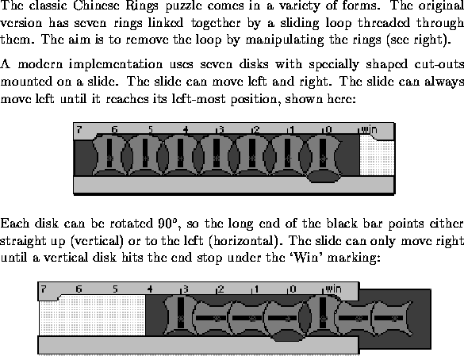
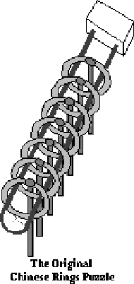
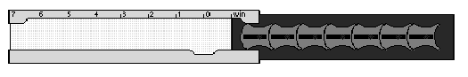
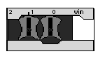

|  |  |
A disk can be rotated between horizontal and vertical only if it is positioned over the indentation marked `0' and the disk on its right is vertical . The right-most disk can always rotate if it is in position `0' since it has no disk on its right.
The aim is to free the slide by moving it so its left edge aligns with the `Win' mark:

Your task is to write a program which will take several part-solved puzzles and compute the number of steps needed to move the slide to position `Win' for each puzzle.
There will be several puzzles in the input file. The first line of the file will contain an integer n specifying the number of puzzles. There will then be n lines, each of the form:
length orientations position
where length(length < 30) is an integer indicating the number of disks on the slide, orientations is a string of length characters from the set {h,v} giving the orientation of each disk from left to right, and position is an integer from 0 to length specifying the numbered mark which aligns with the left edge of the slide.
For each puzzle, your program should output one integer on a line which counts the minimum number of steps needed to win the puzzle. A step is either a movement of the slide, one unit left or right, or the rotation of a disk.
2 2 vv 2 7 vhhhvhh 4
7 357
